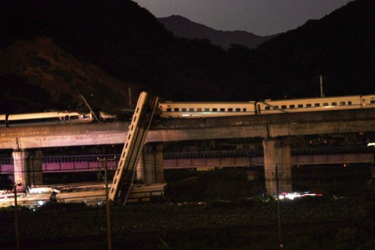
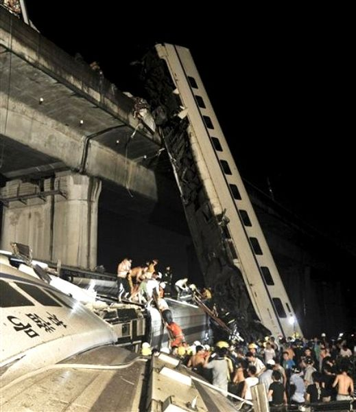
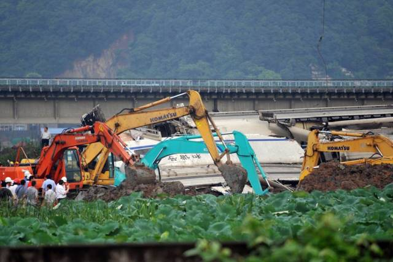
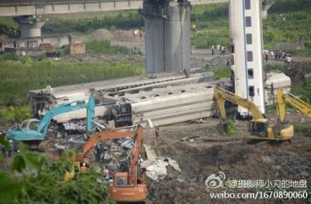
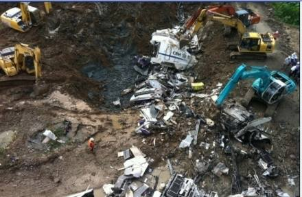

最近这些天出差在外，来回都乘坐那个大名鼎鼎的高铁。去的时候倒不怎么担心，回来之前惊悉7·23动车追尾的特大事故，害得俺浑身不自在。在天朝就是这样，干啥事都没安全感——坐飞机怕掉了，坐火车怕撞了......
这几天看了不少网友对此事的评论。俺是越看越不爽。所以，今天抽空发点牢骚，发牢骚的同时，也顺便给党国的面子抹抹黑。
 
官方的报道是，死亡30多人。俺来简单估算一下：被撞列车的末尾车厢被压扁，里面的人不可能生还。另有4节车厢从桥上坠落。从照片可以大致估计出，这个桥的高度怎么着也得有15米-20米的高度（也就是5到7层楼高），从这么高摔下来，生还概率也不高。每节车厢至少得有50-60号人吧？5节车厢应该将近300号人（此处是俺的大致估计，某匿名网友在本文的评论中给出了这几节车厢的详细乘客数据）。大伙儿用膝盖想一想，有4节车厢的人从5楼以上的高度做自由落体，还有一节车厢被彻底压扁，怎么可能才死30几人？
为啥党国要竭尽全力去编造这么一个破绽百出的谎话捏？按照天朝的律法，由突发事故的死亡人数来决定事故的级别。死亡30多人，算重大事故；如果死亡40多人，可能就是特大事故，铁道部的部级领导就会被问责。所以，真理部一口咬定，仅仅死亡30多人。这个数字是很有讲究的。
  
在事故次日的凌晨4点（事发不到8小时），CCAV 就急切地宣布说，事故现场已经探测不到生命特征，搜救工作即将结束；结果不久之后，即发现一名幸存者。到了中午，CCAV 再次强调现场没有生命体征；结果下午5点再次发现一幸存的女孩......
与此同时，“有关部门”以迅雷不及掩耳盗铃的速度，调来多辆大型推土机，把现场清理一空，6节坠落的车厢被肢解、掩埋。天晓得肢解车厢的时候，里面是否还有幸存者。当记者质疑上述行为时，铁道部的部长给出了这样的解答：动车包含有国家级的技术，必须掩埋以防止技术泄漏。
这是党国官员编造的又一拙劣谎言。首先，出事故的2列机车，都是仿制国外的型号，谈不上有什么国家级的技术机密。退一步说，就算真的有什么高级机密需要保护，完全可以采取其它措施来保护机密。为什么非得采用“就地掩埋”这一招？
如果大伙儿结合前面提到的“隐瞒死亡人数”，那毁尸灭迹的做法就好理解了。天朝官员的逻辑是这样的——为了保住官位，就必须隐瞒死亡人数；为了隐瞒死亡人数，就必须彻底清理事故现场。在这个逻辑推理过程中，完全不考虑是否有幸存者被活埋。
对于事故起因，官方的说法是这样的：主要事故责任人是老天爷。因为他老人家在错误的时间、错误的地点进行打雷闪电，导致动车D3115出现电力故障。
对于解释，像俺这种铁路系统的门外汉，或许就被党国给糊弄过去了。但是群众的眼睛是雪亮的。一些细心的网友以及一些熟悉铁路系统的网友总结许多疑点，俺挑选几条比较浅显的，列举如下：
动车的信号系统和供电接触网是2个独立的系统。信号系统的信号箱位于铁轨路基的两侧，而供电接触网位于列车上方。如果发生雷击，应该击中上方的供电接触网，位于路基的信号系统不应该受影响。
如果信号系统能正常工作，为何调度人员没发现列车已经停了？
铁路的调度系统是有多重保险的。即便是信号系统出故障，调度人员也能发现该列车停运。
在最近几年，发生过多次动车遭雷击而停止运行，但是都没有发生追尾。同样是雷击，为何这次会追尾？
据现场的网友反馈，碰撞时间应该是20点34分。官方一开始公布的事故时间也是20点34分，但是后来又改为20点27分。这其中有什么奥妙？
根据列车时刻表，D301应该比D3115早19分钟到达温州，为啥反而是D301撞上D3115的尾部？
上述这些疑点充分说明了：党国的有关部门，企图把所有责任都归咎于老天爷，以此来逃避自己应有的责任。再回想一下本月刚开通的高铁，开通头2周就频繁出故障。有关部门用"磨合期"3个字就给搪塞过去了。这样一种态度，大伙儿能指望有关部门真心彻查事故原因吗？
从上面的分析，大伙儿应该明白一个道理：我们的朝廷，最看重的是面子；朝廷的高官，最看重的是位子。至于屁民的小命，那是相当不值钱滴。反正天朝的人口世界第一，多死几个屁民，也无伤大雅。
以前，山西煤矿频发重大事故，大伙儿估计都不太关心。毕竟，大部分屁民是不用亲自下矿井去挖煤的。所以，矿难再多，和自个儿的关系不大。但是铁路系统就不同了，俺相信多数屁民都需要坐火车。面对目前铁路系统的诸多隐患，没准儿哪天，你就成了牺牲品！
所以，还是那句老话：【你可以不关心政治，但是政治会来关心你】。如果听任天朝一天天烂下去，我等屁民终究会跟着倒霉。
顺便说一下，去年上海公寓楼火灾时，俺曾经介绍过《党国应对灾难的标准操作流程》。从这次事故，朝廷的处理流程来看，套路基本没变。
俺博客上，和本文相关的帖子（需翻墙）：
7·23动车追尾事件一周回顾
党国应对灾难的标准操作流程
闲聊中美文化差异——9·11十周年随想
这几天看了不少网友对此事的评论。俺是越看越不爽。所以，今天抽空发点牢骚，发牢骚的同时，也顺便给党国的面子抹抹黑。
★隐瞒死亡人数
官方的报道是，死亡30多人。俺来简单估算一下：被撞列车的末尾车厢被压扁，里面的人不可能生还。另有4节车厢从桥上坠落。从照片可以大致估计出，这个桥的高度怎么着也得有15米-20米的高度（也就是5到7层楼高），从这么高摔下来，生还概率也不高。每节车厢至少得有50-60号人吧？5节车厢应该将近300号人（此处是俺的大致估计，某匿名网友在本文的评论中给出了这几节车厢的详细乘客数据）。大伙儿用膝盖想一想，有4节车厢的人从5楼以上的高度做自由落体，还有一节车厢被彻底压扁，怎么可能才死30几人？
为啥党国要竭尽全力去编造这么一个破绽百出的谎话捏？按照天朝的律法，由突发事故的死亡人数来决定事故的级别。死亡30多人，算重大事故；如果死亡40多人，可能就是特大事故，铁道部的部级领导就会被问责。所以，真理部一口咬定，仅仅死亡30多人。这个数字是很有讲究的。
★匆忙毁尸灭迹
在事故次日的凌晨4点（事发不到8小时），CCAV 就急切地宣布说，事故现场已经探测不到生命特征，搜救工作即将结束；结果不久之后，即发现一名幸存者。到了中午，CCAV 再次强调现场没有生命体征；结果下午5点再次发现一幸存的女孩......
与此同时，“有关部门”以迅雷不及掩耳盗铃的速度，调来多辆大型推土机，把现场清理一空，6节坠落的车厢被肢解、掩埋。天晓得肢解车厢的时候，里面是否还有幸存者。当记者质疑上述行为时，铁道部的部长给出了这样的解答：动车包含有国家级的技术，必须掩埋以防止技术泄漏。
这是党国官员编造的又一拙劣谎言。首先，出事故的2列机车，都是仿制国外的型号，谈不上有什么国家级的技术机密。退一步说，就算真的有什么高级机密需要保护，完全可以采取其它措施来保护机密。为什么非得采用“就地掩埋”这一招？
如果大伙儿结合前面提到的“隐瞒死亡人数”，那毁尸灭迹的做法就好理解了。天朝官员的逻辑是这样的——为了保住官位，就必须隐瞒死亡人数；为了隐瞒死亡人数，就必须彻底清理事故现场。在这个逻辑推理过程中，完全不考虑是否有幸存者被活埋。
★误导事故原因
对于事故起因，官方的说法是这样的：主要事故责任人是老天爷。因为他老人家在错误的时间、错误的地点进行打雷闪电，导致动车D3115出现电力故障。
对于解释，像俺这种铁路系统的门外汉，或许就被党国给糊弄过去了。但是群众的眼睛是雪亮的。一些细心的网友以及一些熟悉铁路系统的网友总结许多疑点，俺挑选几条比较浅显的，列举如下：
◇疑点1
动车的信号系统和供电接触网是2个独立的系统。信号系统的信号箱位于铁轨路基的两侧，而供电接触网位于列车上方。如果发生雷击，应该击中上方的供电接触网，位于路基的信号系统不应该受影响。
如果信号系统能正常工作，为何调度人员没发现列车已经停了？
◇疑点2
铁路的调度系统是有多重保险的。即便是信号系统出故障，调度人员也能发现该列车停运。
◇疑点3
在最近几年，发生过多次动车遭雷击而停止运行，但是都没有发生追尾。同样是雷击，为何这次会追尾？
◇疑点4
据现场的网友反馈，碰撞时间应该是20点34分。官方一开始公布的事故时间也是20点34分，但是后来又改为20点27分。这其中有什么奥妙？
◇疑点5
根据列车时刻表，D301应该比D3115早19分钟到达温州，为啥反而是D301撞上D3115的尾部？
◇小结
上述这些疑点充分说明了：党国的有关部门，企图把所有责任都归咎于老天爷，以此来逃避自己应有的责任。再回想一下本月刚开通的高铁，开通头2周就频繁出故障。有关部门用"磨合期"3个字就给搪塞过去了。这样一种态度，大伙儿能指望有关部门真心彻查事故原因吗？
★总结
从上面的分析，大伙儿应该明白一个道理：我们的朝廷，最看重的是面子；朝廷的高官，最看重的是位子。至于屁民的小命，那是相当不值钱滴。反正天朝的人口世界第一，多死几个屁民，也无伤大雅。
以前，山西煤矿频发重大事故，大伙儿估计都不太关心。毕竟，大部分屁民是不用亲自下矿井去挖煤的。所以，矿难再多，和自个儿的关系不大。但是铁路系统就不同了，俺相信多数屁民都需要坐火车。面对目前铁路系统的诸多隐患，没准儿哪天，你就成了牺牲品！
所以，还是那句老话：【你可以不关心政治，但是政治会来关心你】。如果听任天朝一天天烂下去，我等屁民终究会跟着倒霉。
顺便说一下，去年上海公寓楼火灾时，俺曾经介绍过《党国应对灾难的标准操作流程》。从这次事故，朝廷的处理流程来看，套路基本没变。
俺博客上，和本文相关的帖子（需翻墙）：
7·23动车追尾事件一周回顾
党国应对灾难的标准操作流程
闲聊中美文化差异——9·11十周年随想
版权声明
本博客所有的原创文章，作者皆保留版权。转载必须包含本声明，保持本文完整，并以超链接形式注明作者编程随想和本文原始地址：
https://program-think.blogspot.com/2011/07/wenzhou-train-collision.html
本博客所有的原创文章，作者皆保留版权。转载必须包含本声明，保持本文完整，并以超链接形式注明作者编程随想和本文原始地址：
https://program-think.blogspot.com/2011/07/wenzhou-train-collision.html